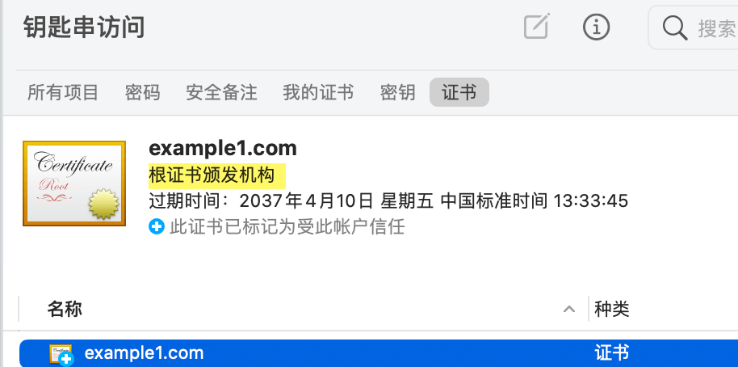

网络编程
https与证书
http的问题
HTTP 是明文传输的协议,数据在传输过程中不加密, 容易被窃听篡改和劫持
解决方案
1. 对称加密
什么是对称加密
能使用同一个密钥用来加密和解密 这也是普通人立马就可以想到的方式
我来举个我设计的算法:
发送 hello world, 加密方法是 将字符加上在单词上的索引*密钥,这里密钥=1
h 索引是1 -> h+1=i
e 索引是2 -> e+2=g
hello world => igopt xqupi
知道密钥就可以解密了
Tip
2. 非对称加密
非对称加密
它使用了一对密钥，分别是公钥（Public Key）和私钥（Private Key）
如何解决对称加密中密钥传输安全问题?
使用非对称加密算法, 私钥放在服务器,被拦截黑客也无法获取,公钥在浏览器
浏览器使用公钥加密对称加密用的密钥, 服务器使用私钥解密得到真实这个密钥.
是不是觉得多此一举了, 直接用非对称加密算法加密数据不就得了??
非对称加密解密耗时, 每次数据传输都这样 ,伤不起
密钥由服务器生成, 只生成一对, 如果来一个客户端就生成一对,还是耗时.
所以只要浏览器访问它就会得到这个公钥, 黑客也能得到, 如果它拦截了服务器返回给客户端的数据,可以解密
所以我们使用结合2个算法,保证一开始对称加密的密钥(盐)传输安全就行了,对对称加密的密钥用公钥加密,黑客截取数据,因为它只有公钥,是无法解密的
这样服务端知道了 对称加密的密钥, 这之后就用对称加密算法对数据进行加密来传输
Question
事情好像完美解决了,真的安全了吗?
Tip
3. 中间人攻击
前面的问题
黑客可以在浏览器获取服务器发送的公钥的阶段拦截,那它可以伪造成服务器,作为一个中间人
浏览器发送到了 中间人, 中间人自己生成一对公钥私钥, 它将自己的这个公钥返回给浏览器,自己再向真正的服务器发起请求
浏览器得到一个假的公钥, 然后它发送的数据全部被中间人截获,可以解密...
问题的关键是, 浏览器确保得到服务端真正下发的公钥
如何解决呢?
现实的一个例子
假设我去一家某某明星开的店买东西, 我要先确认这家店是不是真的, 我们就去看营业执照
一看盖章是真的. 这就行了吗? 一个人想开个店 ,他自己去申请营业执照, 那这个章也是真的啊, 光看章这样还不行!!!
那我看看营业执照上写的法人是谁不就行了吗? 对!
审批人员, 盖章的时候看身份证和脸写上法人,而不是让申请者随便写,然后在名字上盖章,这样没法篡改了.
现在我们改进我们之前的设计(仅仅是自己的思考过程,与实际https不一样 ):
服务端将 它的公钥 发送给 值得信赖第三方证书颁发机构CA,CA用自己的一对密钥中的私钥对服务端公钥进行加密
服务端 把从CA那里获取的密文发送给浏览器, 浏览器用 CA的公钥进行解密.这里的关键就是操作系统安装后就有一些CA的公钥,所以浏览器无需通过网络获取CA公钥,要不然又重复之前的问题了.只要浏览器能用这个CA公钥解密, 就说明数据是通过CA加密的.
那中间人将自己的公钥发送给CA,CA用私钥加密后发送给中间人,中间人再转发给浏览器,这个时候浏览器是可以解密的,就以为是ok的了! 不行!!
那CA给你公钥加密的时候, 再带上发起请求的网站的域名不就ok了. 这样即使中间人请求CA,CA加密会带上中间人的域名, 浏览器解密后发现域名不是自己想要访问的网站 . 中间人向CA申请证书时,会递交个人信息, CA会审核真实性, 所以不会让它随便写域名,无法冒充原来我们真正请求的那个服务器
问题
中间人把自己当成CA 做证书发给浏览器行吗?
这样浏览器查看证书颁发机构, 它操作系统就没有,因为只有内置的那些可靠的, 所以没有对应的公钥来解密
当然如果你的系统被黑客安装了它自己生成的证书, 那么浏览器就会找到对应的公钥来解密了,不过这是你的问题
4. https 最终方案
证书相关
Root CA 会给二级 CA 颁发证书,
一般用户网站的证书 由 二级CA颁发.
操作系统默认就安装了很多Root CA
Tip
X.509 是一种常用的数字证书格式标准,定义了证书的结构和内容
openssl 相关操作
# 私钥
# 记得权限设置600最好
# 非对称算法 使用rsa 生成
genrsa -out server.key 2048
# 表示会对生成的key 进行一次对称加密, 会提示你输入密码
# 不过不推荐, 需要你输入密码解密.麻烦
genrsa -out server-des.key -des 2048
# 从私钥提取公钥 ,这里要对应的算法, rsa
rsa -in server.key -pubout -out server.pub
# 会提示你输入密码,才能提取公钥
rsa -in server-des.key -pubout -out server-des.pub
# 将加密过的私钥 转换为 不加密的
rsa -in server-des.key -out server-des-remove.key
echo 123 > tmp.txt
# 使用公钥加密
rsautl -encrypt -in tmp.txt -inkey server.pub -pubin -out tmp.txt.encry
# 使用私钥解密
# 输出到文件
rsautl -decrypt -in tmp.txt.encry -inkey server.key -out tmp.txt.dencry
# 直接输出解密后的内容
rsautl -decrypt -in tmp.txt.encry -inkey server.key
# 使用私钥加密(签名)
rsautl -sign -in tmp.txt -inkey server.key -out tmp.txt.sign
# 使用公钥解密(验签)
rsautl -verify -in tmp.txt.sign -inkey server.pub -pubin
模拟CA颁发证书
Important
注意这里是我们模拟CA机构, 所以步骤很多, 如果只是简单的为我们服务器生成一个证书, 不需要这样,见快速自签名证书
1.配置CA
/etc/pki/tls/openssl.cnf [ ca ]
default_ca = CA_default #默认CA的设置是哪个, 下面那个配置就是了.
####################################################################
[ CA_default ]
dir = / etc / pki / CA #
certs = $ dir / certs # 发布的证书放这个目录
crl_dir = $ dir / crl # 证书吊销列表存放目录
database = $ dir / index . txt # 颁发给谁等等信息数据的索引
#unique_subject = no # 默认是yes ,表示 证书申请者主体 唯一, 不能用同一个csr申请多个证书
new_certs_dir = $ dir / newcerts # 新颁发的证书存放目录,当然上面的certs 也会有新颁发的证书存放
certificate = $ dir / cacert . pem # CA的证书 (我们自己测试就一个Root CA就行)
serial = $ dir / serial # 每个证书都有编号, 这里是下一个要颁发的证书的编号
crlnumber = $ dir / crlnumber # 吊销的编号,同上
crl = $ dir / crl . pem # 包含之前所有吊销证书的列表
private_key = $ dir / private / cakey . pem # CA的私钥
RANDFILE = $ dir / private / . rand # private random number file
x509_extensions = usr_cert # The extentions to add to the cert
name_opt = ca_default # Subject Name options
cert_opt = ca_default # Certificate field options
default_days = 365 # 证书默认有效期 天 ,可以改成3650
default_crl_days = 30 # how long before next CRL
default_md = sha256 # use SHA-256 by default
preserve = no # keep passed DN ordering
policy = policy_match #匹配下面的 表示使用这个安全策略
[ policy_match ] # 你在生成证书的时候会提示你输入这些信息
# match 表示将来你用户网站申请证书时填写东西必须与CA的一致
# 也就是说你网站申请时 国家 部门,公司必须和CA的一致
# 我们自己 内部用, 可以用这个策略来
countryName = match
stateOrProvinceName = match # 州名或省份名称，可以是中文或英文
organizationName = match # 公司名称，可以是中文或英文
organizationalUnitName = optional # 部门名称，可以是中文或英文
commonName = supplied #必须输入 申请 SSL 证书的具体网站域名
emailAddress = optional # optional 可写可不写
[ policy_anything ] # 你可以选择这个策略
countryName = optional
stateOrProvinceName = optional
localityName = optional
organizationName = optional
organizationalUnitName = optional
commonName = supplied
emailAddress = optional
2.CA生成根证书
# 模拟CA,本地自定义CA,我们假设在一台服务器上 是专门弄CA的
certs
crl
newcerts
private
cd /etc/pki/CA
index.txt
# 16进制
echo 01 > serial
# 生成CA的私钥
genrsa -out ./private/cakey.pem 2048
# 生成CA自签名证书 cacert.pem
# x509表示输出这种格式的证书
req -x509 -new -key ./private/cakey.pem \
-days 5000 \
-out cacert.pem
# 直接指定
req -x509 -new -key ./private/cakey.pem \
-subj "/CN=example1.com/C=CN/O=taobao/ST=BJ" \
-days 5000 \
-out cacert.pem
# 验签, 用颁发证书的 x 去验证 被签发的 y
verify -CAfile cacert.pem cacert.pem
# 查看证书内容, 如果直接用base64 -d 解码会看到一些乱码.
# 也可以将这个文件 打开 (在mac或windows上 会用默认的程序打开,可以看到相关信息)
x509 -in cacert.pem -noout -text #(1)
因为我们的配置文件里有 x509_extensions = v3_ca所以这些相应的会在自签名证书里添加 [ v3_ca ]
subjectKeyIdentifier = hash
authorityKeyIdentifier = keyid : always , issuer
basicConstraints = CA : true
Certificate :
Data :
Version : 3 (0x2)
Serial Number :
ee:e1:85:de:8f:2a:00:76
Signature Algorithm : sha256WithRSAEncryption
# 证书颁发者
Issuer : C=XX, L=Default City, O=Default Company Ltd, CN=example1.com
Validity
Not Before : Aug 1 16:51:52 2023 GMT
Not After : Apr 9 16:51:52 2037 GMT
# 证书申请者, 颁发给谁 ,这里和 颁发者一样, 自签名
Subject : C=XX, L=Default City, O=Default Company Ltd, CN=example1.com
Subject Public Key Info :
Public Key Algorithm : rsaEncryption
Public-Key : (2048 bit)
Modulus :
00:98:ad:ff:cc:a1:2d:2c:24:30:d4:87:14:02:06 :
0f:50:60:ec:b2:0c:19:09:7c:96:74:82:46:c0:a3 :
bc:86:77:7e:b2:fb:9e:a1:4f:fd:2b:3a:02:20:2b :
a1:94:d4:49:62:ce:36:1f:80:a8:71:fb:1e:3f:e3 :
90:d3:78:f7:74:86:4f:3b:8c:85:d1:ae:4f:26:23 :
15:29:f0:ed:0f:ee:a7:08:f5:3c:70:f2:b5:1c:f1 :
71:e1:73:79:85:9d:11:64:2f:84:29:93:5b:df:d7 :
a2:32:19:fe:c4:72:70:a9:d1:b3:54:22:6e:77:27 :
2d:43:ec:5c:06:6a:7b:65:07:a9:ba:9a:35:db:2a :
7c:6f:f5:d6:27:59:15:d5:40:d3:94:dc:4c:7d:25 :
8e:a3:3d:23:d1:5b:4e:6a:35:cf:ee:b4:0f:59:ec :
65:bb:b6:75:21:c5:6d:dd:a6:87:a7:15:af:bb:e1 :
a5:75:6c:6c:36:da:60:13:41:f3:a8:11:b1:3f:8f :
bd:d4:03:c7:e0:f5:2f:68:76:7f:d0:67:45:eb:48 :
8a:ad:70:34:3f:6b:fa:fc:bb:83:4f:e8:a0:3c:5c :
77:b5:c6:10:e0:b3:a8:fc:66:8c:56:e8:9d:64:6e :
8c:fe:42:65:02:c5:1d:81:66:e4:60:f2:5b:6d:e1 :
cc:cb
Exponent : 65537 (0x10001)
X509v3 extensions :
X509v3 Subject Key Identifier :
3C:CE:32:F7:55:76:EB:E7:4D:CF:10:26:F0:35:D2:24:3B:89:6B:94
X509v3 Authority Key Identifier :
keyid:3C:CE:32:F7:55:76:EB:E7:4D:CF:10:26:F0:35:D2:24:3B:89:6B:94
X509v3 Basic Constraints :
CA:TRUE
Signature Algorithm : sha256WithRSAEncryption
49:b0:f1:1b:58:06:be:02:e7:8a:7e:f0:59:d1:96:22:9f:62 :
ba:e0:a3:09:5c:56:b3:2b:8c:a4:9d:6b:4f:dc:ea:af:39:b1 :
05:01:78:ed:7d:c6:84:59:3b:a6:d4:c4:5f:ae:d9:d3:82:80 :
be:41:e0:c5:ae:ff:40:89:c5:2a:bd:f3:5b:20:c6:c5:59:6d :
32:3c:19:b2:9b:4d:7f:c3:ef:a1:ab:51:6e:19:b7:88:45:91 :
ef:ab:e7:c9:bd:c0:ca:c0:fa:48:58:cf:a0:e3:d2:bb:41:e8 :
60:da:6b:0b:1f:91:fa:cb:08:9c:4f:4e:05:3b:80:2a:ad:63 :
b1:75:c1:57:1a:08:27:a2:d6:06:52:00:d4:d2:41:3a:ad:27 :
11:67:ba:de:85:57:24:d5:cf:77:d7:b7:a7:8a:9e:c2:29:e4 :
41:ce:4a:37:8f:db:14:50:32:60:80:9a:92:f1:76:7e:73:80 :
37:cc:6c:fb:ca:82:02:8b:8f:62:5c:91:b1:0a:ad:72:57:e0 :
6d:a1:12:0b:c7:86:ef:9f:47:35:52:96:65:e0:cf:b2:65:d5 :
45:a1:8f:db:12:2a:e8:ae:c6:f3:08:97:b5:1a:7a:4c:f9:92 :
30:bd:ce:28:94:84:a9:67:f4:d5:2a:87:cc:da:6e:4c:ad:a6 :
18:39:d5:32
3.用户服务器提交申请
# 现在扮演 用户网站申请证书, 假定在另外一台服务器
# 先创建网站的私钥
genrsa -out server.key 2048
# 直接创建证书签名请求csr文件
# 注意 由于我们配置了 policy_match ,所以几个 需要和CA的一致
# 指定 server.key 是因为csr信息 需要包含服务端的公钥,公钥可以从私钥提取.
# 说明这些是想说 写的时候 知道为啥需要这些参数
req -new -key server.key -subj "/CN=example1.com/C=CN/O=taobao/ST=BJ" -out server.csr
# 查看一下csr
req -in server.csr -text -noout
# 将它 发送给 CA服务器
4.CA根据申请生成证书
# 可以指定 -policy ,这样不用与ca 某些一致
# openssl ca -in server.csr -policy policy_anything -out certs/server.crt -days 3650
# 回到 CA 的服务器 ,拿到 用户网站的csr文件, 签署生成证书,最后你发送给申请者
ca -in server.csr -out certs/server.crt -days 3650 #(1)
newcerts # 这个目录下会自动有这次颁发的证书
└── 01 .pem # 里面的内容更多, 会增加解码后的内容
# 验签
verify -CAfile cacert.pem certs/server.crt
# 查看证书, 查看部分内容, -text 会显示所有 -issuer 颁发者 -dates 有效期
x509 -in certs/server.crt -noout -subject -issuer -dates
# 查看证书状态,验证有效与否 01 是serial 证书编号
ca -status 01
# 默认不能使用同一个csr 申请 另外一个证书, 不过可以修改 使它可以
# 除了 前面的配置文件, 我们可以 修改 index.txt.attr
unique_subject = yes # 改成no 就可以
提示信息
5.客户端安装证书
客户端(浏览器的系统) 需要安装 上面创建的根证书 cacert.pem,这样你操作系统就有了CA的公钥了,就好像系统安装后默认的那些Root CA一样

访问 golang web https服务 https://example1.com , 会提示你安装证书
go.mod
main.go
pki
├── server.crt # 上面我们创建的
├── server.key # 上面我们创建的
package main
import (
"fmt"
"log"
"net/http"
)
func main () {
http . HandleFunc ( "/" , handler )
log . Fatal ( http . ListenAndServeTLS ( ":443" , "./pki/server.crt" , "./pki/server.key" , nil ))
}
func handler ( w http . ResponseWriter , r * http . Request ) {
fmt . Fprintln ( w , "Hello, HTTPS!" )
}
/etc/hosts
# 将server.crt 发送到其他机器, 可以在这样的机器上 curl
--cacert server.crt --resolve example1.com:443:192.168.1.104 https://example1.com/
HTTPS!
chrome/edge 浏览器问题
访问网页会提示你 Subject Alternative Name Missing
提示 net: cert_invalid
最后好像除了ca根证书安装, 网站服务器的证书还是要手动安装?
99.吊销证书
# 吊销证书, 指定证书路径即可, 结果看 index.txt 证书状态变成 R 表示revoke
ca -revoke newcerts/01.pem
# 更新吊销列表
# 指定要吊销的证书编号,第一次需要这样,
echo 01 > /etc/pki/CA/crlnumber
ca -gencrl -out /etc/pki/CA/crl.pem
# 查看吊销列表
crl -in /etc/pki/CA/crl.pem -noout -text
快速生成证书
# 不需要ca根证书的, 自签名证书, 自己给自己签名,
# 客户端直接安装这个,里面有公钥,然后服务端也是发送这个证书
# 客户端发送操作系统有这个证书的颁发机构, 其实就是它自己
genrsa -out server.key 2048
req -x509 -new -key server.key -subj "/CN=example1.com/C=CN/O=taobao/ST=BJ" -days 5000 -out server.crt
# centos 7有自带的Makefile
cd /etc/pki/tls/certs/
# 会提示使用方法
# 需要根证书的
# 根 私钥
genrsa -out ca.key 2048
# 根证书
req -x509 -nodes -new -key ca.key -subj "/CN=example1.com/C=CN/O=tb/ST=BJ" -days 5000 -out ca.crt
# 服务器 私钥
genrsa -out server.key 2048
# csr
req -new -key server.key -subj "/CN=example1.com/C=CN/O=tb/ST=BJ" -out server.csr
# 之前的这个操作,会去找配置中的 ca私钥
# openssl ca -in server.csr -out server.crt -days 3650
# 这里我们直接指定 -CAcreateserial 加上这个表示会创建编号文件 ca.srl
# -extfile - configuration file with X509V3 extensions to add
# -extensions - section from config file with X509V3 extensions to add
# 前面我们提到chrome 提示有问题, 应该 只要服务器证书 设置 subjectAltName 就行了.
# 指定ca.crt 那是因为 生成的证书需要颁发机构的信息.
x509 -req -CA ca.crt \
-CAkey ca.key -CAcreateserial \
-in server.csr -out server.crt \
-extensions v3_req \
-extfile <( cat /etc/pki/tls/openssl.cnf <( cat <<EOF
[ v3_req ]
basicConstraints = CA:FALSE
keyUsage = nonRepudiation, digitalSignature, keyEncipherment
subjectAltName = @alt_names
[alt_names]
DNS.1 = example1.com
EOF
))
# 查看
x509 -in server.crt -noout -text #(1)
扩展的一些信息
X509v3 extensions :
X509v3 Basic Constraints :
CA:FALSE
X509v3 Key Usage :
Digital Signature, Non Repudiation, Key Encipherment
X509v3 Subject Alternative Name :
DNS:example1.com
关于证书的总结
Tip
客户端安装根证书(自签名证书也一样)是为了解密服务端传过来的证书内容,以获取服务端的公钥
抓包分析https
Note
go web程序在虚拟机中, 在宿主机浏览器访问
虚拟机中运行 run main.go
# 抓包
-i eth1 -nn -X -S tcp port 443 -w go.pcap
宿主机中用safari访问 https://example1.com, 等一段时间,将虚拟机中的抓取的包go.pcap 在宿主机中用wireshark 打开这个
其他安全相关
摘要算法
Tip
摘要算法（Hash Algorithm）也叫哈希算法、散列算法, 它是一种将任意长度的数据映射为固定长度摘要（哈希值）的算法.摘要算法常用于验证数据的完整性和唯一性,以及密码学中的数字签名、密码校验等应用
任意长度→ 固定长度 , 很显然不可能从映射后的摘要值推导出原来的数据.


{kind=link}